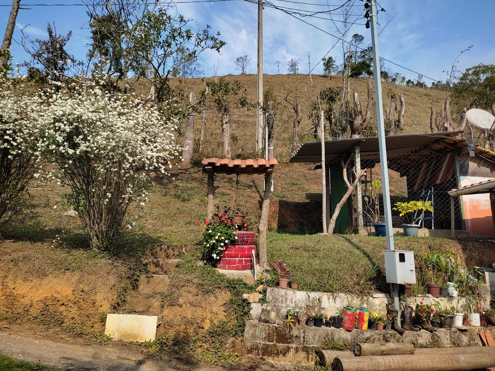

Venha sentir o ar puro o frescor das montanhas, venha se hospedar com a gente:
Viajar é sair da rotina, conhecer novas pessoas e remédio tanto para o corpo como para a alma. A pousada está em construção mas é familiar e hospitaleira. Viajar é explorar o mundo novo e desconhecido, venha hospedar-se na pousada para repor as energias. Muito mais que uma pousada, é uma extensão de sua casa, uma experiência incrível para você e toda a sua família. Nada melhor do que aproveitar suas férias, finais de semana, enfim o ano todo.
Aqui no clima de serra, lareira no inverno e cachoeiras no verão.
Segue o mapa para a sua orientação. Clique na imagem e venha nos conhecer 